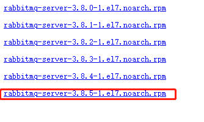
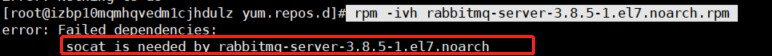
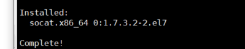
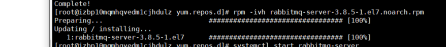
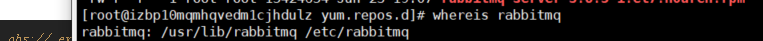
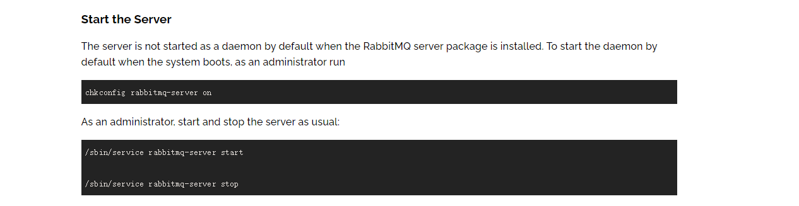
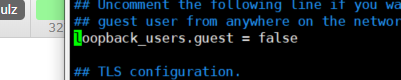
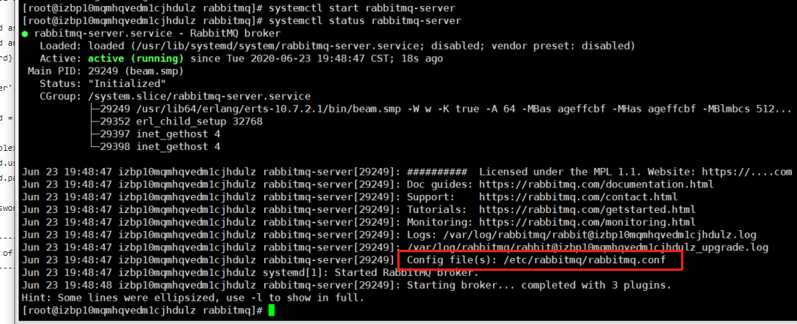
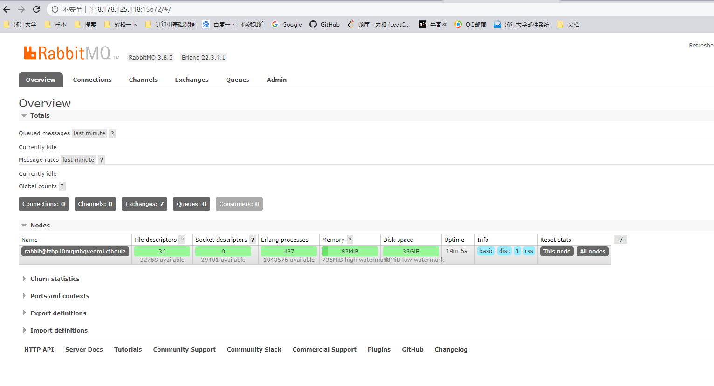

Linux安装RabbitMQ
1、erlang的安装
首先，使用
1 | erl -version |
查看版本，卸载旧版本
1 | yum remove erlang* |
之后安装erlang22.0
在etc/yum.repo.d/rabbitmq-erlang.repo下
1 | # In /etc/yum.repos.d/rabbitmq-erlang.repo |
执行
1 | yum install erlang |
2、安装RabbitMQ Server
下载安装包
https://dl.bintray.com/rabbitmq/rpm/rabbitmq-server/v3.8.x/el/7/noarch/

然后上传到服务器
使用命令
1 | rpm -ivh rabbitmq-server-3.8.5-1.el7.noarch.rpm |
出现错误：

安装socat
1 | yum install socat -y |

继续执行
1 | rpm -ivh rabbitmq-server-3.8.5-1.el7.noarch.rpm |

安装位置

3、启动

1 | # 启动 |
4、配置文件
https://github.com/rabbitmq/rabbitmq-server/blob/v3.7.x/docs/rabbitmq.conf.example
在etc/rabbitmq目录下新建rabbitmq.conf文件
修改其中的（取消注释）

5、配置网页插件
1 | rabbitmq-plugins enable rabbitmq_management |
重新启动之后，查看运行状态
1 | systemctl status rabbitmq-server |

配置文件生效
访问管理界面

附：配置阿里云安全组
放行15672端口